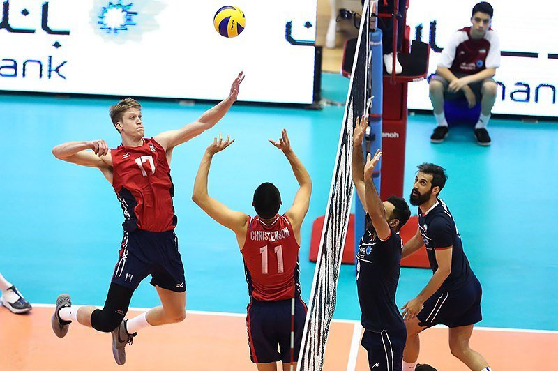

Graphics
What kind of photos are good to encode using JPEG?
JPEG are great for real life photos.
What kind of photos are good to encode using GIF?
GIFs are great for cartoon-like pictures.
What is unique about the PNG format?
Great for cartoon-like pcitures, logos. It also has an alpha and transparency.
How do you resize your photo to the size it should be displayed?
You can resize in the picture in photo editing softwares like paint of Windows. On Mac you will need to preview it to modify the size of the picture.
Why should you resize photos using photo editing software instead of resizing it using CSS?
The files can be smaller and you don't have to download a huge file into CSS to resize.